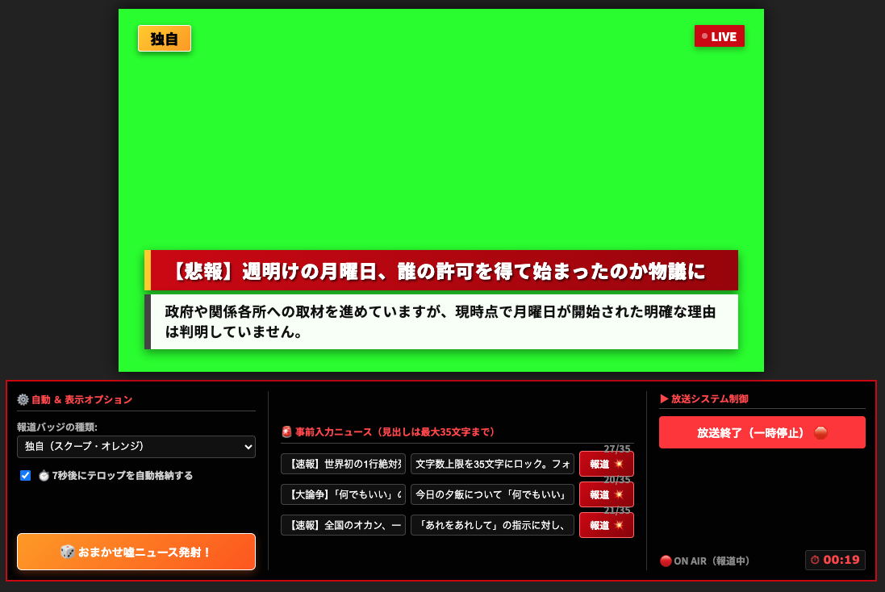
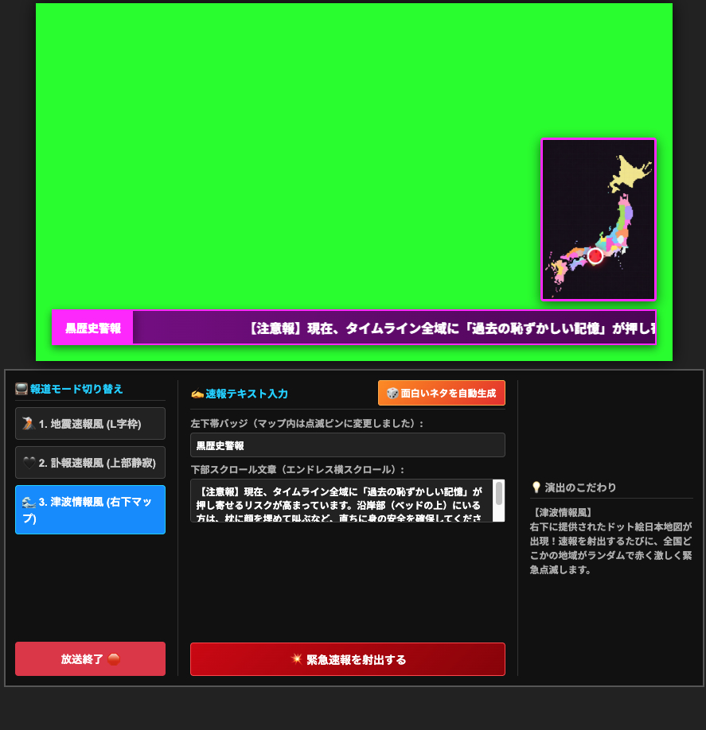
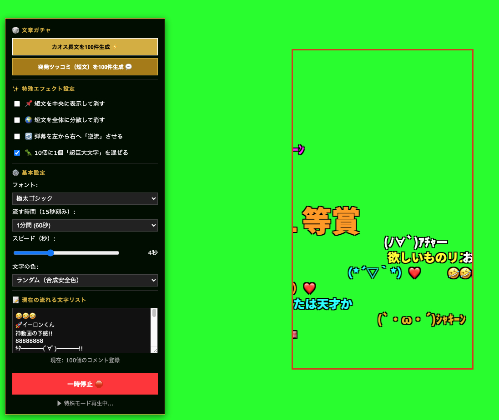
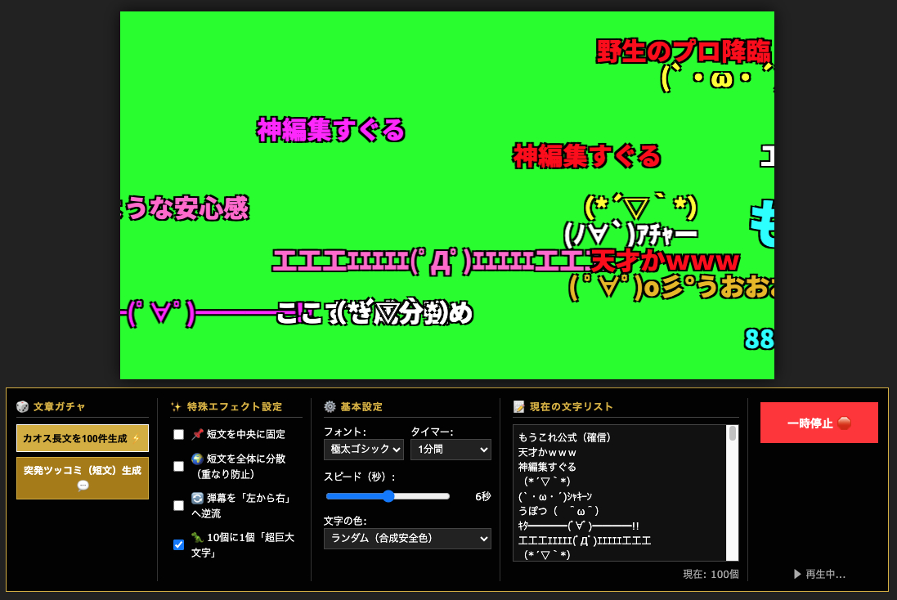
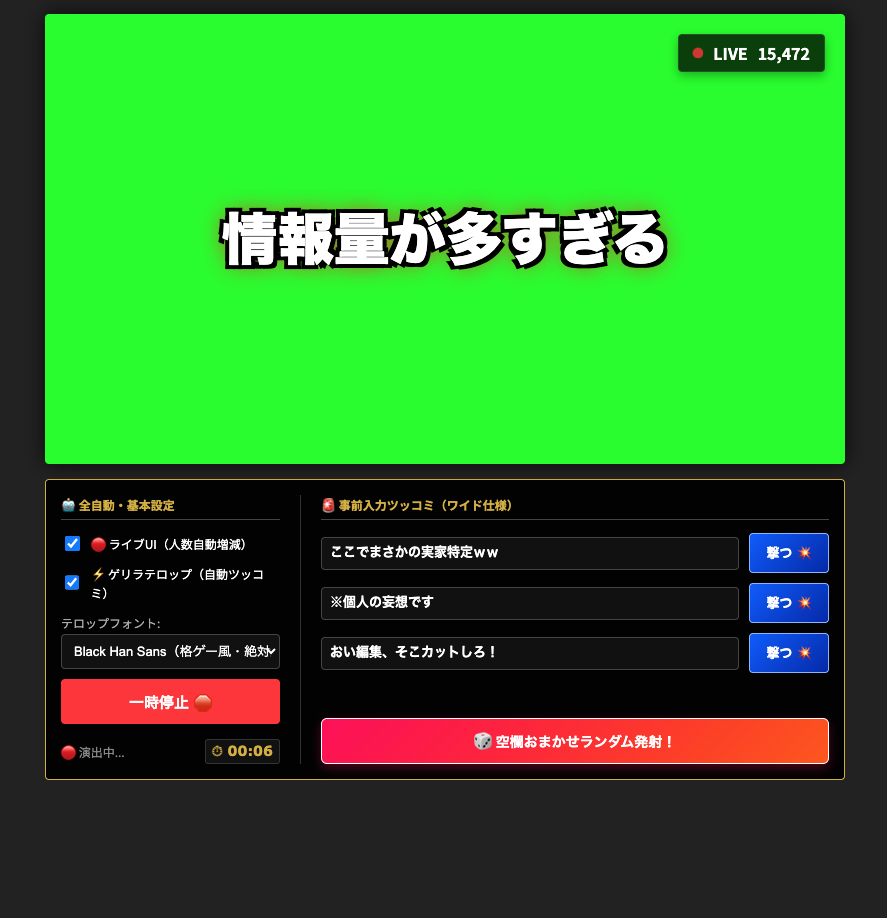

謎ジェネレーターシリーズ マニュアル
クロマキー合成・動画編集用グリーンバックツール 総合使い方ガイド
本ツール群は、動画編集やライブ配信の演出素材として活用するために開発されたグリーンバック（クロマキー）専用の特殊ジェネレーターです。
ブラウザ上の画面をパソコンの画面録画でキャプチャし、お使いの動画編集ソフトやOBS Studio等で「グリーン（#00ff00）」を透過（クロマキー合成）して、メイン動画に重ねてお使いください。
※ 各ツールにはあらかじめ開発者厳選の「おもしろ文章・各種ネタ」がプリセットされていますが、すべての入力欄はカスタム可能です。自分の好きなテキストを入力して自由な演出を行えます。
💡 基本的な操作手順
🎬 各ジェネレーターの特徴と個別解説

１．ニュース速報（BREAKING NEWS）ジェネレーター
テレビの報道番組さながらの緊迫したニュース画面を作り出すツールです。動画内で「重大な発表」をしたい時や、コミカルな大スクープを演出したい時に絶大な威力を発揮します。
- 2行構成のリアルテロップ：太字の「見出し」と、下部の「詳細説明テキスト」が綺麗に連動。
- 報道バッジ切り替え：「独自」「速報」「スクープ」など、状況に合わせたバッジを選択可能。
- 自動格納機能：テロップ射出後、指定時間（7秒後など）に自動でスマートに閉じるオプション付き。

２．緊急災害速報風ジェネレーター
テレビで突ろ流れるあの不穏で緊張感のある「災害速報」の画面をパロディ化・演出できるツールです。動画内で大ハプニングや大ピンチが発生した場面を盛り上げます。
- 3つの内蔵報道モード：【地震速報風(L字枠)】【訃報風(上部静寂)】【津波情報風(右下マップ)】をワンクリックで瞬時に切り替え可能。
- 日本地図連動ピン：津波情報風モードでは、右下にドット絵風の日本地図が出現し、特定の地域がランダムに赤く緊急点滅するこだわり仕様。
- 無限横スクロール：下部のニュース帯テキストがエンドレスで左へと滑らかにスクロールし続けます。

３．縦型ニコニココメジェネレーター
YouTubeショート、TikTok、Instagramリールなどの「スマホ縦画面動画」のサイズ（9:16）に完全特化したコメント流しツールです。縦長動画の枠内だけをコメントが綺麗に横断します。
- 文章ガチャ機能：「カオス長文」や「突発ツッコミ」を100件ワンクリックで自動生成し、即座に賑やかな画面を構築。
- 多彩なエフェクト設定：「中央に固定して消す」「全体に分散」「左右逆流（左から右へ流す）」等の特殊な動きを網羅。
- 超巨大文字：「10個に1個『超巨大文字』を混ぜる」にチェックを入れると、弾幕の中に特大のパワーワードを紛れ込ませてアクセントをつけられます。

４．16対9横型ニコニコ弾幕コメジェネレーター
パソコンやテレビの大画面動画（16:9）に対応した、おなじみのコメント流しツールです。ネット動画特有のお祭り感や視聴者の一体感を手軽に合成できます。
- 圧倒的な弾幕感：登録された最大100個のネットスラングやアスキーアート（AA）、絵文字が重なりを自動防止しながら画面いっぱいに押し寄せます。
- 合成安全色カラー：文字色はランダム（クロマキーの緑に溶けない安全な配色）で出力され、文字のフチ取りも非常にクッキリしています。
- スピード調整：スライダーを動かすことで、コメントが画面を通り抜ける速度を自由にコントロールできます。

５．中央ドデカコメジェネレーター
画面サイズを『800×450』、操作幅を完全に同期させた最新のインパクト特化ツールです。格闘ゲームのコンボフィニッシュやテレビのバラエティ番組のような、画面中央に突き刺さる超巨大ツッコミを演出できます。
- 3連カスタム事前入力（ワイドスロット）：よく使う長いツッコミテキストをあらかじめ3パターン登録しておき、右側の「撃つ💥」ボタンで狙った瞬間に個別発射できます。
- ライブ配信UI連動：画面右上にリアルタイム風の「LIVE視聴者数」が表示され、起動すると数千〜数万人規模で人数がリアルにジュワジュワ増減するギミック付き。
- ゲリラテロップ（全自動）：「自動ツッコミ」を有効にすると、おまかせワードがランダムな色彩（黄色・水色・ピンク等）とド迫力のポップアニメーションで自動的に次々と出現します。